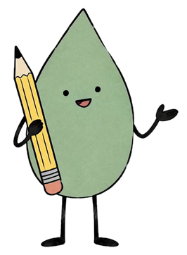

Replaces the captioned walkthrough. One floating chat window (the simulation's own UI); the question card rides through every beat and finally becomes the "Let's begin" button. Silent: headlines carry the teaching.
1920×1080 · 30.0s · 9 beats · silent
Act 1 · Ask like a student (01–03)
Spot theWeakQuestion
THE FLIP TEST
01 · TITLEtitle · 0.0–2.3s
"The flip test" blurs in and out first. Then "Spot the" and "Question" blur in with a gap between them, and "Weak" pops in last on the amber block. The lockup scales up and blurs out to fly into the window.
seam → fly-through (scale + blur)
Spot the Weak QuestionRun the flip test
Run the flip testAsk the AI each question, the way a student would.
Define opportunity cost.
Send it as a student wouldAsk AI ↑
02 · WINDOW RISEproduct_intro · 2.3–4.0s
The window rises from bottom-right, out of focus, and settles into its 3D tilt as it sharpens. The demo question sits ready in the composer.
seam → defocus hand-off (composer stays sharp)
Ask it like a student would
Define opportunity cost.
Send it as a student wouldAsk AI ↑
03 · ASK LIKE A STUDENTfeature · 4.0–7.0s
The window blurs back while the composer stays sharp and comes forward. The headline builds word by word. The hand cursor arcs in, presses Ask AI and sends out a ripple. The composer then morphs into a cream message bubble.
seam → shape morph (composer → bubble)
Act 2 · Answer and judge (04–06)
Question
Define opportunity cost.
Opportunity cost is the value of the next best alternative you give up when you make a choice.
04 · SAGE ANSWERSfeature · 7.0–9.6s
The camera pushes in on Sage and flattens the window. A thinking bar fills in about 0.6s and retracts, and a complete textbook answer lands line by line: instant, and with nothing about your course.
seam → anchor (reply stays, panel rises)
Judge it.
Opportunity cost is the value of the next best alternative you give up when you make a choice.
Is this question…
VulnerableAI can answer it without anything from your course.
ResilientAI can't answer it without something only your class has.
05 · JUDGE ITfeature · 9.6–12.6s
The judgement panel rises under the reply; both cards have equal weight until the cursor picks Vulnerable. The radio dot swells with a small overshoot, then the camera rushes into it and through to the next scene.
seam → zoom-through (radio dot)
Instant answer = weak question
Your judgement
Vulnerable

Yes, vulnerable. AI answered without knowing anything about your course. A student could paste that straight in.
06 · VERDICT (HELD)benefit · 12.6–15.4s
Kemi's card assembles inside the dot's white-out, and the camera settles close on the thread with only a slight tilt, so the feedback reads large. The rule of thumb lands and holds still for 0.9s; only a slow camera drift moves.
seam → camera push (to composer)
Act 3 · Redesign and begin (07–09)
Make it need your class
Using the price data from our week-two market survey, what was the stall's opportunity cost?
2 tries left↑
07 · MAKE IT NEED YOUR CLASSfeature · 15.4–20.4s
The camera pushes onto the composer. "Define opportunity cost." is selected and retyped at about 18 characters a second as a question about the class's own survey data. Send fills one try dot, and the composer collapses into a new bubble.
seam → shape morph (composer → bubble)
Now AI can't answer it
Using the price data from our week-two market survey, what was the stall's opportunity cost?
ResilientIt depends on data only your class has.
I don't have the data from your week two session, so I can't answer this properly.
08 · NOW AI CAN'Tbenefit · 20.4–25.0s
Sage thinks, then admits it can't answer. The Resilient badge pops in with a small overshoot. After the headline, everything except the badge blurs away, leaving it alone at the centre.
seam → isolation (badge stays)
Spot the Weak Question
Let's begin →
3 questions to test · 2 to redesign · 1 on your own
09 · LET'S BEGINcta · 25.0–30.0s
The badge grows, its fill sweeps from mint to accent blue, and it morphs into the Let's begin pill. The mark and title blur in above it and the plan line below. Then a 1.5s hold with a slow push-in and drifting blooms.
end · hold 1.5s
Reference
Seam map
01→02fly-through: scale + blur
02→03defocus, composer anchor
03→04morph: composer → bubble
04→05anchor: reply stays
05→06zoom-through radio dot
06→07camera push to composer
07→08morph: composer → bubble
08→09isolate badge, morph → pill
09hold, push-in, blooms
Every seam hands off a shared object; seams overlap 0.08–0.15s. The camera always travels left and up into the next beat.